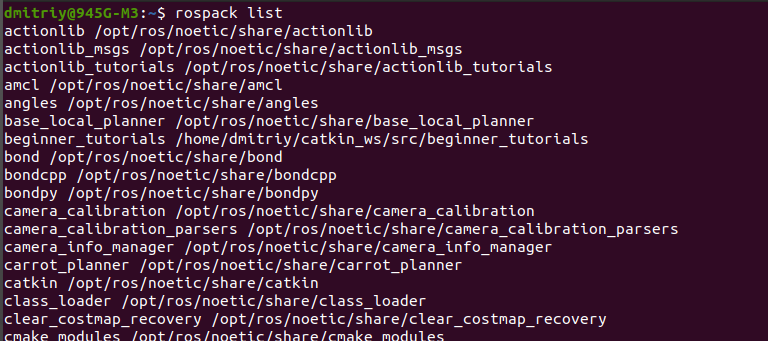
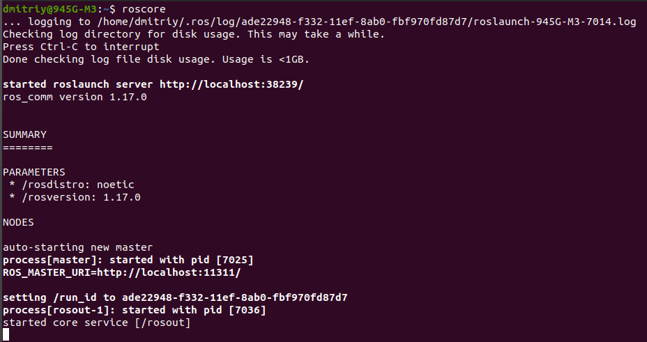
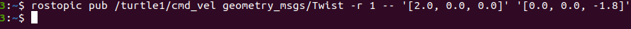
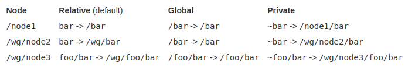

Основы ROS
Ссылки: Основные концепции системы ROS
ROS служит для связи между компьютером и роботом. Например, для перемещения рук робота выдается команда ROS, или разработчики роботов пишут сценарии на Python или C++, которые заставляют робота выполнять команды. Сценарии, в свою очередь, могут вызывать различные управляющие программы, которые вызывают фактическое движение рук робота. С помощью ROS также можно спроектировать и смоделировать своего собственного робота.
Команда rospack find <имя пакета> возвращает путь к пакету с именем <имя пакета>.
rospask list

Более 200 пакетов ros в моей системе установлено.
Если после rosls несколько раз нажать TAB, то выведет список установленных пакетов. У меня 318
Если после ros несколько раз нажать TAB, то выведет все доступные команды для ROS .
roscore
Кроме мастера будет запущен сервер параметров и нода rosout, служающая для логирования.
При запуске Мастер будет запущен по адресу URI, установленным в переменной окружения ROS_MASTER_URI. По умолчанию адрес использует IP-адрес локального ПК и номер порта 11311

Видно, что также запустился сервер roslaunch и можно увидеть pid запущенных процессов.
При выполнении команды roslaunch вызывать отдельно мастера не надо, он вызывается автоматически.
Ноды бывают публикуемые, это которые передают данные и ноды - подписчики, это которые получают данные. Взаимодействие нод осуществляется через топики.
При запуске нода регистрирует информацию о себе на мастере (название ноды, типы обрабатываемых сообщений). Зарегистрированная нода может взаимодействовать с другими нодами (получать и отправлять запросы). Важно отметить что обмен сообщениями между нодами работает без участия мастера (соединение между нодами происходит напрямую через топик). Мастер обеспечивает только единое пространство имен для решения вопроса куда подключиться к конкретной ноде. Адрес запуска ноды, берётся из переменной окружения ROS_HOSTNAME, которая должна быть определенна до запуска. Порт устанавливается на произвольное уникальное значение.
Запуск ноды turtlesim
Прежде чем выполнять запустить ноду и выполнять команды над ней, следует вызвать мастера ROS, команда:
roscore
И после этого в другом терминале выполнять команды.
roscore &
Запуск нод
rosrun <пакет> <нода> [<имя параметра>:=<значение>]
Причём в графе <нода> указывается не произвольное имя новой ноды, а класс-тип нод, экземпляр которого нужно запустить (что-то питоновское). Непосредственно имя ноды устанавливается через параметры.
Запустим ноду класса turtlesin_node внутри пакета turtlesim.
Список запущенных нод:
Для того, чтобы указать имя ноды, при её создании необходимо присвоить значение переменной __name (с двумя символами нижнего подчёркивания). Таким образом, чтобы создать ноду с именем “turtle_node” необходимо выполнить команду:
Информация о ноде:
Сервер параметров - это общий словарь параметров к которым ноды обращаются во время своей работы. Сервер Параметров запускается вместе с Мастером.
Пример: сделать фон для экрана с черепашкой красным:
Пример: запущена нода turtlesim, узнать все параметры:
[package name]/[message type]
Узнать для конкретного пакета какие он использует типы сообщений, команда:
Зная тип (имя) сообщения, можем посмотреть формат этого сообщения, команда:
Чтобы определить сочетание цветов красного, зеленого и синего на фоне нашей черепашки, воспользуйтесь командой:
Получим поток сообщений, публикуемых в топик /turtle1/color_sensor:
Мы можем опубликовать постоянный поток команд, используя опцию -r:
rostopic hz [topic] - сообщает о скорости публикации данных в [topic].
Имена ресурсов графа представляют собой иерархическую структуру имен, которая используется для всех ресурсов в графе вычислений ROS, таких как узлы, параметры, разделы и службы. Эти имена очень важны в ROS и играют центральную роль в создании более крупных и сложных систем в ROS, поэтому очень важно понимать, как работают эти имена и как вы можете ими манипулировать.
Любой топик, сервис или параметр идентифицируется с помощью уникального имени. ROS-имя представляет собой иерархическую структуру с символом / в качестве разделителя (сходно с именами в файловой системе).
Имена разрешаются относительно, поэтому ресурсам не нужно знать, в каком пространстве имен они находятся. Это упрощает программирование, поскольку узлы, которые работают вместе, могут быть записаны так, как если бы все они находились в пространстве имен верхнего уровня. Когда эти узлы интегрируются в более крупную систему, их можно поместить в пространство имен, определяющее их набор кода. Например, можно взять демонстрационную версию Stanford и демонстрационную версию Willow Garage и объединить их в новую демонстрационную версию с подграфами stanford и wg. Если бы у обеих демонстраций был узел с именем "camera", они бы не конфликтовали. Инструменты (например, визуализация графика), а также параметры (например, demo_name), которые должны быть видны всему графику, могут быть созданы узлами верхнего уровня.
В ROS существует четыре типа имен графических ресурсов: базовые, относительные, глобальные и частные, которые имеют следующий синтаксис:
Вот несколько примеров разрешения имен:
Приватное имя
Относительное имя
Пример создание топика foo с учетом общего пространства имен:
Пример:
Теперь о том, как происходит разделение. Нода hokuyo_node только публикует сообщения, не зная о том, подписан ли на них кто либо. Нода пакета laser_filters только подписывается на сообщения топика, не зная о том, публикует ли кто-то туда сообщения. Обе ноды могут быть запущены, остановлены, перезапущены, в любом порядке, не порождая при этом ошибок.
Далее мы можем добавить роботу другой лазерный дальномер, поэтому нужно переконфигурировать систему. Всё что нужно при этом – переназначить (remap) используемые имена. При запуске ноды hokuyo_node мы можем вместо имени scan переназначить имя base_scan. B то же самое сделать с нодой – фильтром. Теперь обе эти ноды будут связаны с использованием топика base_scan, и перестанут обрабатывать сообщение тописа scan. После этого мы можем запустить ещё одну ноду hokuyo_node для нового лазерного дальномера.
Имена ресурсов пакетов очень похожи на пути к файлам, за исключением того, что они намного короче. Это связано со способностью ROS находить пакеты на диске и делать дополнительные предположения об их содержимом. Например, описания сообщений всегда хранятся в подкаталоге msg и имеют расширение .msg, поэтому std_msgs/String - это сокращение от path/to/std_msgs/msg/String.msg. Аналогично, тип узла foo/bar эквивалентен поиску файла с именем bar в пакете foo с правами доступа к исполняемому файлу.
Допустимые имена
rosed [package_name] [filename]
Служит для редактирования файла [filename] из пакета [package_name].Файловая система ROS
Пакеты (Packages):
Пакет – основная единица файловой системы ROS. Пакет содержит выполняемые процессы ROS (узлы или ноды - nodes), библиотеки на основе ROS, наборы данных, конфигурационные файлы и прочие полезные данные. Пакет – это минимальная единица для компиляции и релиза в ROS.
Команды для работы с пакетами:
rospack find <package_name>

Выводит список имен пакетов ROS и каталоги.
roscd <package-or-stack>[/subdir]

echo $ROS_PACKAGE_PATH
приведет вас к папке, в которой хранятся файлы журнала ROSS. Обратите внимание, что если вы еще не запускали какие-либо программы для ROS, это приведет к ошибке, указывающей на то, что они еще не существуют.
показывает состав пакета, обращаясь к нему по имени, а не по абсолютному пути.
dmitriy@945G-M3:~$ rosls turtlesim
cmake images msg package.xml srv
И где тут нода turtlesim_node?
Основная структура:
Граф вычислений ROS
Граф вычислений ROS – это список программ, запускаемых при запуске робота. Основные программы из графа вычислений – это ноды, Мастер (Master), Сервер Параметров (Parameter Server), сообщения (messages), сервисы (services), топики (topics), контейнеры (bags). Все эти сущности передают данные для вычислительного графа ROS разными способами.
Мастер ROS
При запуске робота первым всегда открывается мастер.
Мастер выполняет роль сервера имен для возможности подключения между собой различных нод. Связь между нодами (обмен сообщениями), невозможна без запущенного мастера. Запускается командой:
Ноды (Nodes)
Одной из основных задач ROS является взаимодействие между модулями ROS, называемых нодами. Эти ноды представляют собой скрипты, обычно написанные на Python или C++, которые могут находиться полностью на одном компьютере, или могут быть распределены между разными компьютерами или между компьютером и роботом. Преимущество такой распределенной структуры заключается в том, что каждый узел может управлять одним из механизмом робота. Например один узел может захватывать и выводить изображения с камеры, а другой узел может управлять манипулятором робота в ответ на вид с камеры.
Ссылки: Занятие № 2: Детальное представление о среде
Если вы хотите чтобы roscore запустился в фоновом режиме, то запустите его командой:
Запуск нод в ROS осуществляется при помощи команды rosrun. Общий синтаксис употребления этой команды выглядит так:
rosrun turtlesim turtlesim_node
Будет запущена нода типа turtlesim_node из пакета turtlesim. Имя ноды в данном случае не указывалось и оно присвоится автоматически.
rosnode list
Будет выведено следующее:
/rosout
/turtlesim
Таким образом создалась нода с именем /turtlesim и определённая в глобальном поле имён, о чём говорит предшествующий символ слеш “/”. Если в новом терминале вновь будет выполнена команда:
rosrun turtlesim turtlesim_node
То создастся новая нода с тем же именем /turtlesim. Это вызовет аварийную остановку уже созданной ноды:
[ WARN] [1740472774.740801921]: Shutdown request received.
[ WARN] [1740472774.740992774]: Reason given for shutdown: [[/turtlesim] Reason: new node registered with same name]
И первая нода закроется.
rosrun turtlesim turtlesim_node __name:=turtle_node
dmitriy@945G-M3:~$ rosnode list
/rosout
/turtle_node
/turtlesim
Пинг ноды:
rosnode ping [node_name] - пингуем ноду, чтобы проверить, что она запущена.
rosnode info name_node
Например информация о turtle_node:
dmitriy@945G-M3:~$ rosnode info /turtle_node
--------------------------------------------------------------------------------
Node [/turtle_node]
Publications:
* /rosout [rosgraph_msgs/Log]
* /turtle1/color_sensor [turtlesim/Color]
* /turtle1/pose [turtlesim/Pose]
Subscriptions:
* /turtle1/cmd_vel [unknown type]
Services:
* /clear
* /kill
* /reset
* /spawn
* /turtle1/set_pen
* /turtle1/teleport_absolute
* /turtle1/teleport_relative
* /turtle_node/get_loggers
* /turtle_node/set_logger_level
contacting node http://localhost:33307/ ...
Pid: 10018
Connections:
* topic: /rosout
* to: /rosout
* direction: outbound (58135 - 127.0.0.1:51038) [27]
* transport: TCPROS
Сервер параметров (Parameter Server)
Ссылки: Parameter Server
Подробнее о сервере параметров
Параметры в ROS представляют собой глобальные значения, которые можно использовать для настройки поведения нод. rosparam позволяет хранить данные на сервере параметров ROS и манипулировать ими. Сервер параметров может хранить целые числа, значения с плавающей запятой, логические значения, словари и списки. Для синтаксиса rosparam использует язык разметки YAML. В простых случаях YAML выглядит очень естественно: 1 - целое число, 1.0 - число с плавающей точкой, "единица" - строка, true - логическое значение, [1, 2, 3] - список целых чисел, {a: b, c: d} - словарь.
Команды rosparam:
Для работы с сервером параметров служит команда rosparam .
Аргументы командной строки для команды rosparam соответствуют переменной окружения ROS_NAMESPACE (см. раздел Переменные окружения). Имена параметров, которые не заданы глобально, разрешаются в соответствии с параметром ROS_NAMESPACE.
посмотреть список параметров. Например, если запущена нода turtlesin, то:
dmitriy@945G-M3:~$ rosparam list
/rosdistro
/roslaunch/uris/host_localhost__38239
/rosversion
/run_id
/turtlesim/background_b
/turtlesim/background_g
/turtlesim/background_r
Установит для параметра значение [parameter-value]. [parameter-value] является обязательным, если не указаны --textfile или --binfile.
rosparam set background_b 0
rosparam set background_g 0
rosparam set background_r 255
rosservice call /clear
Последняя команда, чтобы экран изменился.
Получить значение параметра <parameter-name>
-p - Выводится красивым шрифтом. ВНИМАНИЕ: это небезопасно для YAML.
-v - Показывать подробные выходные данные.
rosparam get /
rosdistro: 'noetic
'
roslaunch:
uris:
host_localhost__38239: http://localhost:38239/
rosversion: '1.17.0
'
run_id: ade22948-f332-11ef-8ab0-fbf970fd87d7
turtlesim:
background_b: 255
background_g: 86
background_r: 250
Загрузит параметры из файла YAML в указанное [пространство имен] (по умолчанию /). ПРИМЕЧАНИЕ: это добавит дополнительные значения к текущим.
-v Показывать подробные выходные данные.
Перенесёт содержимое сервера параметров в формате YAML в файл file.yaml.
rosparam dump <file> <namespace>
Выводит только параметры в указанном пространстве имен.
-v Подробный вывод. например:
rosparam dump -v gains.yaml /gains
dumping namespace [/gains] to file [gains.yaml]
/gains/i=1.0
/gains/p=1.0
/gains/d=1.0
Удалит значение параметра.
ПРИМЕЧАНИЕ: get и dump - это, по сути, одна и та же команда, как и set и load, с единственной разницей в том, используется файл или нет.
Сервисы (Services)
Модель публикации/ подписки является очень гибкой, но её схема односторонней передачи сообщений «многие-многим» не подходит для взаимодействий типа «запрос-ответ», которые часто нужны в распределённой системе. Механизм «запрос-ответ» реализован через Сервисы. Сервис определяется парой структур сообщений – одна для запроса и одна для ответа. Нода предоставляет сервис, используя определённое Имя сервиса, клиент использует сервис, отправляя сообщение-запрос и ожидая ответа. Клиентские библиотеки ROS обычно представляют это взаимодействие для программиста в виде вызова удалённой процедуры.
Некоторые команды с сервисами:
Сервисы настраиваются в файлах .srv Файлы .srv описывают типы сервисов в ROS: определяют структуры данных, которые сервис принимает и возвращает. Каждый .srv файл содержит две части: запрос (Request) и ответ (Response), разделённые символом "---"
Сообщения (Messages)
Ноды отправляют и принимают данные между собой по определённому формату через топики. Эти данные называются Сообщениями, а формат сообщений Типом Сообщения. Команды над сообщениями - это rostopic и rosmsg.
Топики (Topics)
Сообщения передаются через механизм публикации/подписки. Нода отправляет сообщение, публикуя (publish) его в определённом Топике. Топик – это имя, идентифицирующее содержание сообщения. Нода, заинтересованная в определённых данных, осуществляет подписку (subscribe) на соответствующий Топик. Для одного топика может существовать несколько параллельно публикующих/подписанных на него Нод, равно как и одна Нода может публиковать сообщения в и/или подписываться на несколько Топиков. В общес случае, публикаторы/подписчики не оказывают влияния друг на друга. Идея заключается в отделении производства информации от её использования. Логически Топик может быть представлен как строго типизированная шина сообщений. У каждой шины есть наименование, и любой элемент может подсоединиться к шине для получения и отправки сообщений соответствующего типа.
Команды rostopic:
Весь список команд rostopic:
Опции этой команды:

Ноды общаются между собой с помошью messages (сообщений). Чтобы ноды понимали друг друга, сообщения должны иметь одинаковый тип. Чтобы узнать тип сообщений, служит команда:
rostopic type [name_topic]
Вернёт тип (имя) сообщений, используемого для топика в формате имя пакета/тип сообщения:

rosmsg list | grep name_package
Например:
rosmsg list | grep turtlesim
покажет:
turtlesim/Color
turtlesim/Pose
rosmsg show [message_type]
Например:
dmitriy@945G-M3:~$ rosmsg show turtlesim/Color
uint8 r
uint8 g
uint8 b
Формат, обозначающий цвета красный (r), зеленый (g) и синий (b), представляет собой 8-разрядное целое число без знака.
rostopic echo [name_topic]
в следующей форме:
rostopic echo /turtle1/color_sensor
r: 69
g: 86
b: 255
Зная тип (имя) сообщений, мы можем отправлять их ноде через топик, тем самым управлять нодой.
Синтаксис:
rostopic pub [topic] [msg_type] [args]
публикует данные по объявленному топику.

Чтобы не запоминать формат сообщения, можно после типа сообщения дважды нажать клавишу tab. Это выпишет имена полей и рядом начальные значения, которыми они инициализируются. Далее их можно изменить.

Контейнеры (Bags)
Контейнеры предоставляют форматы для записи и воспроизведения потоков ROS-сообщений. Контейнеры являются важным механизмом для записи данных, например, данных с сенсоров, которые трудно собрать, но необходимо сохранять для разработки и тестирования алгоритмов.
Имена
Ссылки: Names
Примеры ROS-имен:
/ (глобальное пространство имен)
/foo
/stanford/robot/name
/wg/node1
Допустимые имена
Допустимое имя имеет следующие характеристики:
Имена без каких-либо определителей пространства имен являются базовыми именами. Базовые имена на самом деле являются подклассом относительных имен и имеют те же правила разрешения. Базовые имена чаще всего используются для инициализации имени узла.
По умолчанию разрешение выполняется относительно пространства имен узла. Например, узел /wg/node1 имеет пространство имен /wg, поэтому имя node2 будет преобразовано в /wg/node2.
Имена, начинающиеся с "/", являются глобальными - они считаются полностью разрешенными. По возможности следует избегать глобальных имен, поскольку они ограничивают переносимость кода.
Имена, начинающиеся с "~", являются частными. Они преобразуют имя узла в пространство имен. Например, узел 1 в пространстве имен /wg/ имеет частное пространство имен /wg/node1. Личные имена полезны для передачи параметров определенному узлу через сервер параметров.

Каждая нода может использовать собственное приватное пространство имен (соответствующее имени ноды) для своих ресурсов. Например, нода aruco_detect может публиковать такие топики:
/aruco_detect/markers
/aruco_detect/visualization
/aruco_detect/debug
Когда нода ссылается на свой приватный ресурс, вместо пространства имен (/aruco_detect/) используется символ ~, например:
~markers
~visualization
~debug
Таким образом, создание топика foo в приватном пространство имен из Python будет выглядеть так:
private_foo_pub = rospy.Publisher('~foo', String, queue_size=1)
Несколько нод также могут объединяться в общее пространство имен (например, при одновременной работе нескольких роботов). Для того, чтобы ссылаться на топики с учетом общего пространства имен, в названии ресурса опускается начальный символ /.
relative_foo_pub = rospy.Publisher('foo', String, queue_size=1)
для контроля лазерного дальномера мы запускаем драйвер hokuyo_node, который опрашивает лазер и публикует sensor_msgs/LaserScan сообщения в топик scan. Дла обработки этих данных, мы можем написать, используя пакет laser_filters, ноду, которая подписывается на сообщения топика scan. После подписки наш laser_filters автоматически начнёт получать сообщения от лазера.
Имена ресурсов пакетов
Имена ресурсов пакетов используются в ROS с концепциями на уровне файловой системы для упрощения процесса обращения к файлам и типам данных на диске. Имена ресурсов пакетов очень просты: это просто название пакета, в котором находится ресурс, плюс название ресурса. Например, имя "std_msgs/String" относится к типу сообщения "String" в пакете "std_msgs".
Имена ресурсов пакетов имеют строгие правила именования, поскольку они часто используются в автоматически генерируемом коде. По этой причине в пакете ROS не может быть специальных символов, кроме символа подчеркивания, и они должны начинаться с алфавитного знака. Допустимое имя имеет следующие характеристики:
Команда rosed
Синтаксис:
По умолчанию редактором является vim. Чтобы редактором для команды rosed был более простой nano, следует в файл ~/.bashrc добавить строку:
export EDITOR='nano -w'
Получение подсказки по команде
Познакомились с довольно большим количеством инструментов ROS. Иногда бывает сложно отследить, какие аргументы требуются для каждой команды. К счастью, большинство инструментов ROS предоставляют свою собственную помощь. Чтобы получить подсказку по команде, достаточно опции -h: